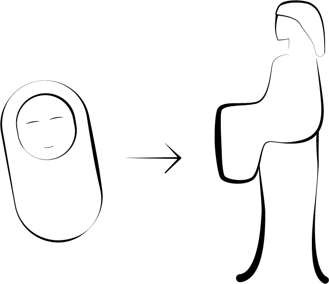

One day in the bamboo forest, an old bamboo cutter called Taketori no Okina comes across a mysterious, shining stalk of bamboo.
Upon cutting it open, he is surprised to find an infant the size of his thumb inside.
The old man and his wife, having no children of their own, decide to raise the infant as their own daughter, and name her Nayotake no Kaguya-hime.
From that moment on, every time the man cuts a stalk of bamboo, he finds a small nugget of gold inside.

The family soon grows rich, and within just three months, Kaguya-hime grows from an infant into a woman of ordinary size and extraordinary beauty.
At first, the old man tries to keep news of Kaguya-hime away from outsiders, but as word of her beauty spreads, she attracts many suitors who seek her hand in marriage.
Among the suitors are five nobles. They eventually persuade the old man to have Kaguya-hime choose from among them.
Uninterested, Kaguya-hime devises five impossible tasks, agreeing to marry the noble who can bring her the item specified for him. But none succeeded.
After this, the Emperor of Japan comes to visit Kaguya-hime and, after falling in love, asks her hand in marriage.
Although he is not subjected to an impossible trial, Kaguya-hime rejects his request for marriage as well, telling him that she is not from his country and therefore cannot go to the palace with him.
That summer, whenever Kaguya-hime views the full moon, her eyes fill with tears. Her behaviour becomes increasingly erratic until she reveals that she is not of the Earth and that she must return to her people on the Moon.
Kaguya-hime announces that, though she loves her many friends on Earth, she must return to her true home on the Moon.
She then takes a little of the elixir of immortality, attaches it to her letter to the Emperor, and gives it to the guard officer.
The Emperor reads her letter and is overcome with sadness, and asks his servants, "Which mountain is the closest place to Heaven?"
The Emperor then orders his men to take the letter to the summit of the mountain and burn it, in the hope that his message would reach the distant princess.
They are also ordered to burn the elixir of immortality, as the Emperor does not wish to live without being able to see her.
Legend has it that the word for immortality (不死, fushi), became the name of the mountain, Mount Fuji. It is said that the smoke from the burning still rises to this day.